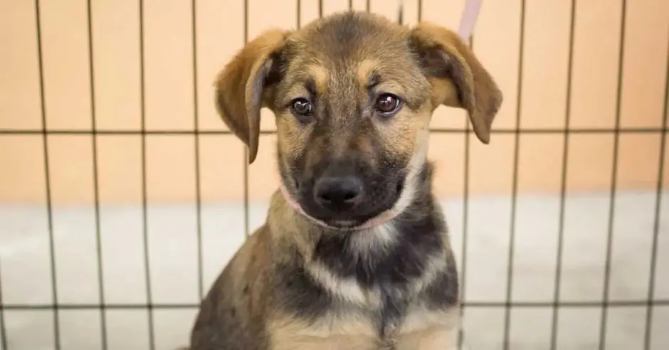

Tierra de Animales realiza campaña de recaudación para atender a más perros callejeros

Adquirir un terreno y construir un refugio para atender a más perros
callejeros,
es el objetivo de la campaña #Ayudanosatenerunrefugio de la Fundación Tierra de
Animales.
La iniciativa además pretende concientizar a la población de realizar
adopciones
de manera responsable.
“Es triste ver el nivel de maltrato al que puede llegar el ser humano hacia
los
animales. La clave para evitarlo está en la educación para prevenir la
propagación, por lo que la castración de mascotas es esencial para prevenir la
propagación callejera”, dijo Marlen Morales, fundadora de Tierra de Animales.
La Fundación ha rescatado 7 mil animales y todos han sido adoptados.
¿Cómo ayudar?
BANCO NACIONAL DE COSTA RICA
- Cuenta IBAN colones CR23015104520010209736
- Cuenta IBAN dólares CR66015104520020026623
BANCO DE COSTA RICA
- Cuenta IBAN en colones: CR51015202001127594306
- Cuenta IBAN en dólares: CR78015202001127594499
BAC SAN JOSÉ
- Cuenta IBAN colones CR08010200009186773378